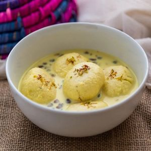

Ras Malai

Description
Ras Malai is a popular Pakistani delicacy made with milk,a curdling agent,sugar, nuts, saffron and cardamoms
Ingridients
For the Rasmalai Balls
- 1 liter whole milk
- 4 tablespoons lemon juice
- 1 teaspoon cornflour
- 4 cups water
- 1 cup sugar
For the syrup
- 500 ml whole milk
- 5-6 green cardamom pods peeled and crushed to get the powder
- saffron a pinch
- 4 tablespoons sugar
- finely chopped pistachios
Steps
- Boil milk in a heavy bottom pan.Once it comes to a boil, switch off the flame and add 1/2 cup of water to bring the temperature of the milk down a bit.
- Wait for 5-10 minutes and then start adding lemon juice till milk curdles.
- Add lemon juice till the milk curdles completely.
- Using a strainer drain the water and collect the chena.
- Rinse it under tap water so that there's no trace of lemon juice in it.
- Leave it in the strainer for 10-15 minutes and then take the chena in your hand and squeeze out remaining water slowly.
- Add cornflour and start mashing the chena till it’s smooth.
- Set the clock to 10 minutes and mash constantly for 10 minutes using your palm. Once it’s smooth, make small balls out of it.
- Heat 1 cup sugar and 4 cups water in a wide pan and wait till it comes to a full boil. Drop the balls in boiling sugar syrup and cook for 15-17 minutes. The balls will double in size by then.
- Take out the balls from the syrup and drop them in fresh water. If they sink to the bottom, the balls are done. They are always done by 15-17 minutes so you can skip this step if you want.In a heavy bottom pan, boil 500 ml of milk.
- Soak few strands of saffron in a tablespoon of warm milk and set aside.
- Once the milk comes to a boil, lower the flame and continue to stir the milk at regular intervals. After 10 minutes add sugar and mix.
- After 20-25 minutes the milk will thicken to desired consistency, add soaked saffron and crushed cardamom.
- Also add finely chopped pistachios [if using]. Mix and switch off the flame.
- Take out the cooled down rasmalai balls from the fresh water bowl. Squeeze and flatten lightly using your hands and put in sugar syrup for around 10-15 minutes [so that they absorb the sugar] before transferring them to milk. Squeeze the balls carefully as they are very soft and can break easily. I like to flatten the rasmalai at this stage rather than flattening them in the beginning. I feel they get cooked evenly in the sugar syrup when the balls are round in shape.
- Transfer the balls to thickened milk [milk should be warm].
Chill in the refrigerator overnight or for 5-6 hours. Garnish with chopped pistachios and few saffron strands before serving.
Back to Homepage